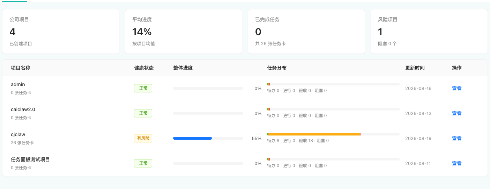
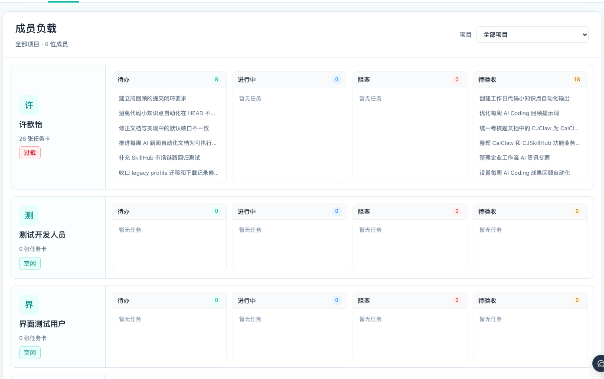
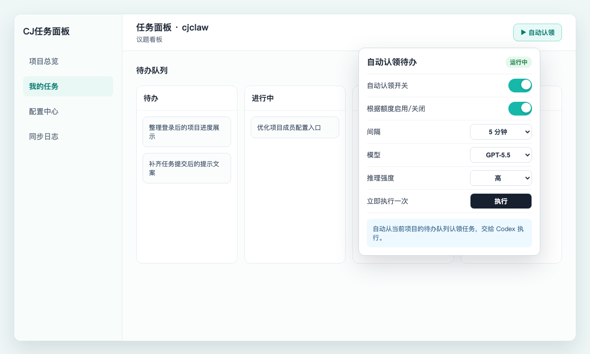
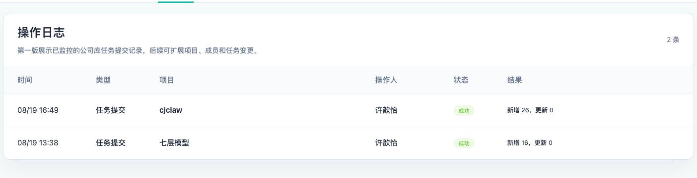

项目协同看板使用手册
这份说明只讲打开面板后的真实操作：Codex 项目应该怎么对应团队项目，怎么从对话生成任务卡片，本地草稿怎么变成团队项目任务，以及团队成员怎么看进度、负载和同步结果。
团队项目通常就是一个 Git 仓库里的真实项目。
本地到团队 生成卡片后，在“我的任务”提交到团队项目本地草稿不会自动上传，提交前可确认目标和数量。
团队进度 用“项目总览”看公司项目整体推进支持搜索、健康筛选、进度和任务状态分布。
人员分工 用“成员负载”看谁忙、谁阻塞按成员展开待办、进行中、阻塞和待验收任务。
对话成卡 点击“生成卡片”，自动把新增对话整理成任务下一次点击只处理之前没有总结过的对话。
自动执行 开启“自动认领”，让 Codex 执行待办队列适合已经拆清楚、可以顺序推进的任务。
0. Codex 使用标准
推荐组织方式使用任务面板前，建议先按项目边界组织 Codex 项目。最推荐的方式是：一个 Codex 项目只对应一个团队项目；这个团队项目通常就是一个 Git 仓库里的真实项目。
- 一个 Codex 项目只服务一个团队项目。
- 一个团队项目对应一个明确的 Git 仓库项目。
- 不要在同一个 Codex 项目里长期混做多个业务项目、多个仓库或多个团队项目。
- “生成卡片”能准确读取当前项目相关的历史对话。
- 任务卡片更容易归到正确的团队项目。
- 提交任务和自动化执行时，不容易串到其他项目。
- 成员负载、同步日志和项目进度会更清楚。
1. 面板状态
两种模式本机还没有连上公司 SQL Server 身份库时进入此状态。可以查看本机 Codex 项目、创建和维护本地任务卡片，也可以使用“生成卡片”整理历史对话。
草稿模式不能查看公司项目进度、成员负载和同步日志，也不能把卡片提交到团队项目。
仓库里的 config/sqlserver-identity.env.example 已带有可用公司库配置，或本机存在 .data/sqlserver-identity.env 覆盖配置，并且数据库可访问时，面板会自动连上公司库。登记姓名和工号后，可以使用团队项目、成员、提交、日志和自动化功能。
登记账号后，本地调度器还会每半小时自动提交已绑定团队项目的新增或变更卡片。
2. 账号和公司库状态
左下角账号入口点击左下角账号入口可以查看当前账号和公司库状态。新版页面不再让用户手填 SQL Server 地址、端口、用户名和密码，而是优先读取 git 仓库里的公司库配置自动连接；需要覆盖默认配置时，再使用本机配置文件。
- 首次使用填写姓名和工号。
- 点击“登记并进入”。
- 之后打开面板会自动恢复账号。
账号弹窗会提示“暂未连接公司数据库”。这时先确认仓库里的 config/sqlserver-identity.env.example 是否可用；如果需要覆盖默认配置，再确认本机 .data/sqlserver-identity.env 已配置，并重启任务面板。
3. 我的任务
本地项目入口“我的任务”用于处理本机项目和团队项目之间的同步关系。页面会按团队项目分组展示本地项目；还没有提交目标的项目会进入“未认领团队项目”。
- 项目名称和更新时间。
- 健康状态。
- 任务卡分布。
- 团队绑定。
- 提交状态。
- “生成卡片”：整理项目历史对话，只生成本地任务。
- “提交任务卡片”：打开确认弹窗，选择团队项目并提交。
- “已提交”：当前没有新的待提交本地卡片。
4. 项目总览
公司项目进度项目总览展示公司库中已经创建且未归档的项目，适合快速判断团队项目整体推进情况。

项目总览会展示公司项目数量、平均进度、已完成任务、风险项目，以及每个项目的健康状态、进度和任务分布。
- 可搜索项目名称。
- 可按全部、正常、风险、阻塞筛选。
- 可查看整体进度、更新时间和任务状态分布。
5. 成员负载
分工检查成员负载用于查看项目成员分别承担了哪些任务，适合判断谁比较忙、谁有阻塞、哪些任务还没有分配。

成员负载支持选择全部项目或某个团队项目，并按成员展示待办、进行中、阻塞、待验收任务。
- 进入“成员负载”。
- 选择全部项目或某一个团队项目。
- 查看每个成员的任务数量、负载标签和状态分布。
- 根据阻塞和待验收积压调整分工。
6. 生成任务卡片
对话成卡“生成卡片”用于把当前本地项目相关的 Codex 对话整理成任务卡片。点击按钮后，面板会自动使用任务面板 Skill 分析当前项目的历史对话，把明确的需求、待办、缺口或未完成事项生成本地任务卡片。
- 第一次点击，会处理当前还没有被整理过的项目对话。
- 下一次再点击，只处理上一次之后新增、还没有总结过的对话。
- 已经总结过的旧对话不会反复生成重复卡片。
- 已经完成、撤回或明确不要的内容，不应继续生成待办。
- 修改标题和描述。
- 移动任务状态。
- 调整优先级。
- 删除不需要的卡片。
7. 提交任务卡片
手动 + 自动本地生成的任务卡片需要提交后才会进入公司库。用户可以手动提交，也可以在登记账号后让本地调度器每半小时自动提交一次。
手动提交路径
确认已经连接公司库，并登记当前账号。
进入“我的任务”，找到本地项目。
点击“提交任务卡片”，在弹窗里选择团队项目。
确认本地项目、待提交数量、提交目标和操作人，然后点击“确认提交”。
数据规则
每半小时自动提交
登记账号后，面板会把当前会话交给本地调度器。本地服务运行且登录会话有效时，调度器每个整点、半点后检查所有已绑定团队项目的本地项目，每半小时最多完成一轮提交；启动后会补跑当前时段。只提交新增或更新过、且还没有提交过的本地卡片。没有新卡片时不会产生重复提交。
8. 自动化执行待办队列
自动认领项目页面右上角有“自动认领”或“无自动化”按钮。开启后，Codex 会自动从当前项目的待办队列里认领任务，并按配置的间隔持续执行。

自动认领适合已经拆清楚、可以让 Agent 顺序推进的待办任务。它不是生成卡片，而是执行队列里的现有待办。
- 自动认领开关。
- 是否根据 Codex 额度自动启用或暂停。
- 执行间隔：5、10、15、30、60 分钟。
- 使用的模型和推理强度。
- 立即执行一次。
- 先把需求拆成明确的待办卡片，再开启自动认领。
- 阻塞、不明确、需要人工判断的任务，不适合直接放进自动执行队列。
- 如果开启额度感知，额度不可用或未知时会暂停自动认领。
- 执行失败时，先查看自动化状态和对应任务评论。
9. 同步日志和操作日志
提交结果同步日志用于查看本地任务卡片提交到公司库的结果。当前主要记录“任务提交”，后续可以扩展项目、成员和任务变更。

如果点击提交后公司项目里没有看到任务，先看日志里的状态、提交人、新增数量、更新数量和失败信息。
10. 配置中心
项目负责人- 查看自己已经加入的团队项目。
- 点击“加入项目”加入已有团队项目。
- 打开某个团队项目查看任务。
- 从本机 Codex 项目创建团队项目。
- 创建后自动成为项目负责人。
- 配置人员、查看项目、删除项目。
11. 只读项目进度页
展示屏如果只需要展示公司项目进度，可以打开 /?panel=database-progress。这个页面会跳过账号登记，只显示公司项目进度总览。
- 适合放在展示屏或给只需要看进度的人使用。
- 隐藏“查看”等会进入项目详情的操作。
- 仍然依赖服务端已经配置公司 SQL Server 身份库。
12. 常见问题
排查为什么登录后没有数据？
先确认当前未归档项目里是否有任务卡片。面板只展示未归档项目；如果任务卡片都在已归档项目里，项目总览不会显示这些任务。
为什么一开始是本地草稿模式？
通常是仓库配置不可用、本机覆盖配置缺失，或者当前网络访问不到公司 SQL Server。确认 config/sqlserver-identity.env.example 或 .data/sqlserver-identity.env 可用并重启任务面板后，会切换到公司库模式。
草稿模式能不能生成卡片？
可以。草稿模式生成的卡片保存在本地，连接公司库后可以手动提交到对应团队项目。
为什么再次点击生成卡片不会重复生成旧卡片？
生成卡片会记录已经处理过的对话位置。下一次点击时，只会处理上次之后新增、还没有总结过的对话。
公司库和本地库会不会互相覆盖？
不会。公司库任务会镜像到本地，本地新增任务必须提交才会进入公司库，镜像下来的公司任务不会重复上传。
为什么按钮显示“已提交”？
当前本地项目已绑定团队项目，且没有新的待提交卡片时，按钮会显示“已提交”。如果之后修改本地任务或新增任务，按钮会重新变成“提交任务卡片”。